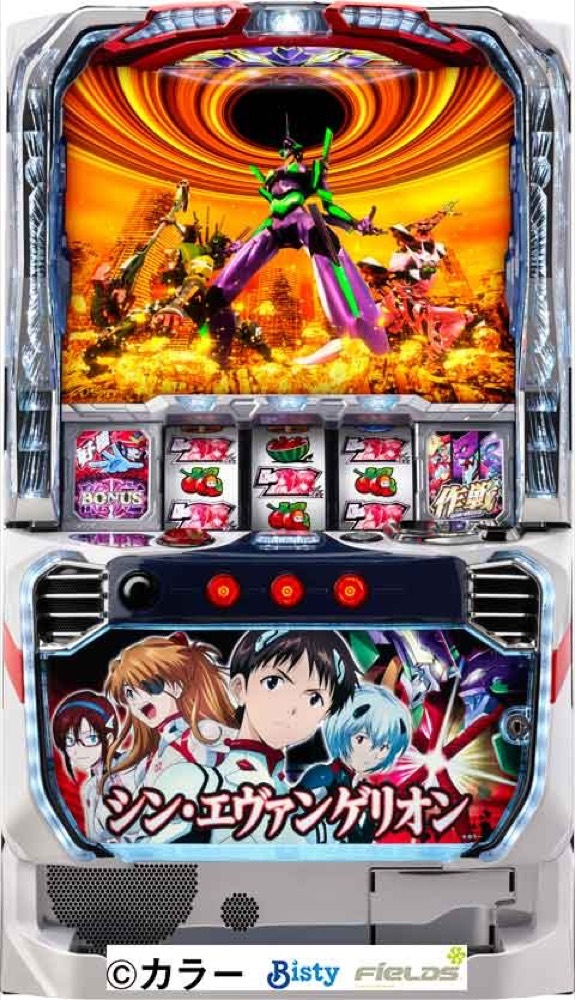

Lパチスロ シン・エヴァンゲリオン
3Gの作戦決定から10G＋αの作戦STへ。BONUSを重ね、マリ獣化から上位STを狙う。
- 導入
- 2025年1月
- メーカー
- ビスティ
- 分類
- パチスロ
主要スペック
設定別初当りを使い、3GのEVANGELION IMPACT、5種類の作戦ST、3種類のBONUS、三機殲滅、マリ獣化チャレンジ、上位のオップファータイプ殲滅作戦までを実機順に体験できます。
- 作戦STは10G＋α・BONUS期待度約72%
- BONUSは純増約5.0枚/G・3種類
- 上位STは20G＋α・継続期待度約95%
Lパチスロ シン・エヴァンゲリオンの見どころと計算条件
設定別初当りを使い、3GのEVANGELION IMPACT、5種類の作戦ST、3種類のBONUS、三機殲滅、マリ獣化チャレンジ、上位のオップファータイプ殲滅作戦までを実機順に体験できます。
スマスロ シンエヴァを数字で早分かり
初当り（作戦ST／BONUS）から作戦ST、オップファータイプ殲滅作戦までの流れと、設定ごとの結果差を固定レートで比較できます。
30秒で分かるスマスロ シンエヴァ
5種類の作戦STで段階を進め、3種類のBONUSと進行ストックを重ねるST型です。三機殲滅は通常STの補助、マリ獣化成功が上位STへの入口です。
こんな遊び方に向いている
- 作戦ごとの必要段階を見比べたい
- BONUS種類とストックをPUSHで開きたい
- 通常STと継続約95%の上位STを比べたい
遊ぶ前に確認したいこと
- 作戦STは10G＋α・BONUS期待度約72%
- マリ獣化は10G・成功期待度約38%
- 非公表の作戦選択率・ストック率は代表モデル
EVANGELION IMPACTと5種類の作戦
初当り後は3GのEVANGELION IMPACTで作戦を決定します。作戦はパリ5段階、ヤマト4段階、US3段階、第8使徒迎撃2段階、ヤシマ1段階で、必要段階が少ないほどBONUSが近づきます。
作戦STは10G＋α。作戦目やレア役で段階を進め、規定段階到達でBONUSです。進行のたびに10Gを再セットする特徴を、サイトでは段階数と総消化G数で表示します。
作戦STと3種類のBONUS
作戦STのBONUS期待度は約72%、純増は約0.1枚/G。BONUSはBIG約150枚＋α、SUPER BIG約300枚＋α、SPECIAL約150枚＋αの3種類です。
BONUS中は作戦進行ストックとVストックを抽選。サイトではBONUS種別をPUSHまで伏せ、獲得枚数とストックを別々に結果へ加算します。
三機殲滅とゲンドウ対決
三機殲滅は8G＋αの作戦進行ストック特化ゾーンです。作戦ST失敗時にストックを使い、作戦継続へつなげます。
VSゲンドウに勝利すると三機殲滅の権利を獲得。三機殲滅は上位ATそのものではなく、通常STを助ける特化ゾーンとして専用表示します。
マリ獣化チャレンジと上位ST
BONUS後の一部で10Gのマリ獣化チャレンジへ。成功期待度は約38%で、成功後はSUPER BIGを経て上位STへ進みます。
オップファータイプ殲滅作戦は20G＋α・純増約5.0枚/G・継続期待度約95%。8段階突破でSUPER BIGに当選し、再び上位STへ戻ります。
固定レートと簡易化する範囲
- 約33.1G/50枚・1,000円46枚貸し・5.2枚交換で固定
- 作戦ごとの選択比率、各ストック率、マリ獣化出現率は非公表のため代表値
- 通常時の全モード・天井・成立役は初当り確率へ集約
- 19,000枚到達時はコンプリート表示
平均Gと投資目安の計算
掲載する作戦ST初当り約1/291.1は設定1基準です。当サイトでは50枚あたり33.1G、1,000円46枚貸しの固定条件から、設定1基準の平均投資目安を約9,600円と計算します。
シミュレーターでは設定1〜6を均等抽選します。設定1〜6で公開されている初当り値を個別に使います。公開されていない特化ゾーン・上位到達率の設定差は加えません。 換金は5.2枚交換で固定し、結果とランキングに設定を表示します。
シミュレーション結果の見方
当るまで初当り（作戦ST／BONUS）・作戦STまでのゲーム数
設定設定1・2・3・4・5・6から抽選された今回の設定
上位到達マリ獣化チャレンジとオップファータイプ殲滅作戦への到達
最終収支差枚と5.2枚交換の収支目安
結果は自動で「マイ記録」に保存され、同じ機種を何回試したか、最高収支、勝率をあとから確認できます。
簡易シミュレーターについて
初当り（作戦ST／BONUS）・作戦ST・オップファータイプ殲滅作戦の流れを固定条件で体験できます。JavaScriptを有効にすると、この位置にシミュレーター、演出、マイ記録、機種別ランキングが表示されます。
結果は娯楽・確率理解のための参考表示です。金銭的価値や交換価値はなく、実際の勝敗や収支を保証しません。18歳未満の方の利用はお控えください。
スマスロ シンエヴァのよくある質問
スマスロ シンエヴァはどんな台？
設定別初当りを使い、3GのEVANGELION IMPACT、5種類の作戦ST、3種類のBONUS、三機殲滅、マリ獣化チャレンジ、上位のオップファータイプ殲滅作戦までを実機順に体験できます。 作戦STは10G＋α・BONUS期待度約72%が主な確認ポイントです。
スマスロ シンエヴァの平均投資目安は？
設定1基準の作戦ST初当り約1/291.1と、50枚あたり33.1G・46枚貸しの固定条件から、平均9,600円を目安として表示します。実際の設定や遊技状況で結果は変わります。
設定とゲームの流れはどう抽選する？
開始時に設定1・2・3・4・5・6から1つを均等抽選し、初当り（作戦ST／BONUS）、作戦ST、マリ獣化チャレンジ、オップファータイプ殲滅作戦の順で到達を判定します。設定は最終結果とランキングに表示します。
収支はどう計算する？
1,000円46枚貸し・5.2枚交換の固定条件で投資、換金、収支目安を計算します。実店舗の再プレイ、持ちメダル、端数処理は含みません。